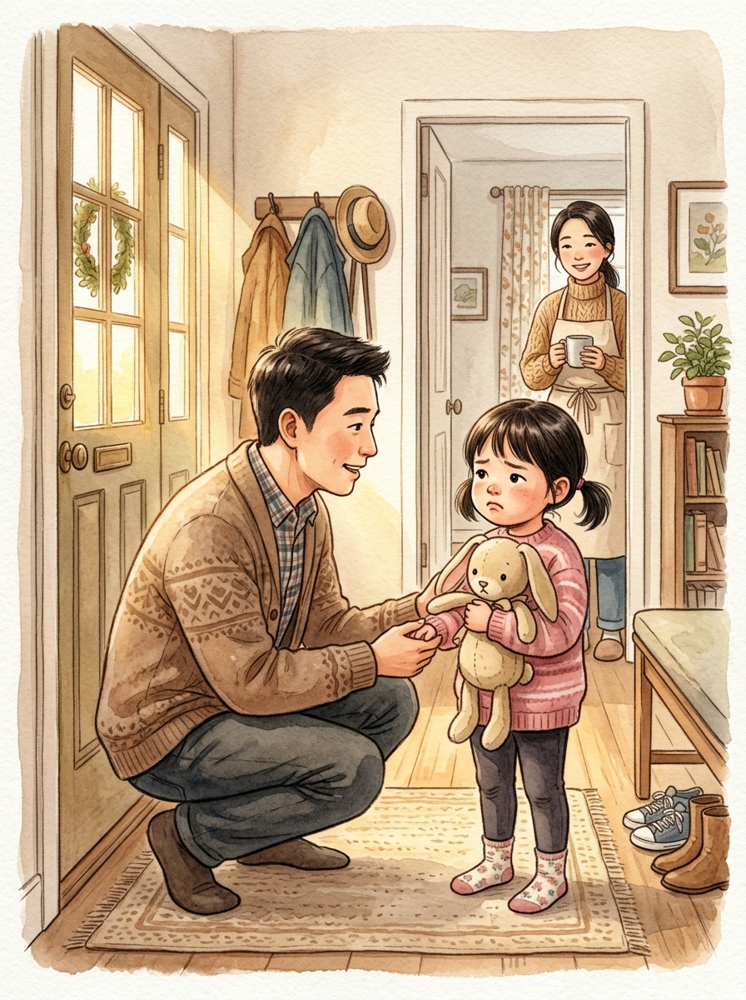

Bab 01
Regulasi Diri
Hari yang Tidak Berjalan Sesuai Rencana
Mangkuk Sup & Kerapuhan Pagi. Ketika boneka kelinci Mochi menahan langkah di lorong pintu keberangkatan sekolah.
🕒 ~3 Menit • Arga & Lila